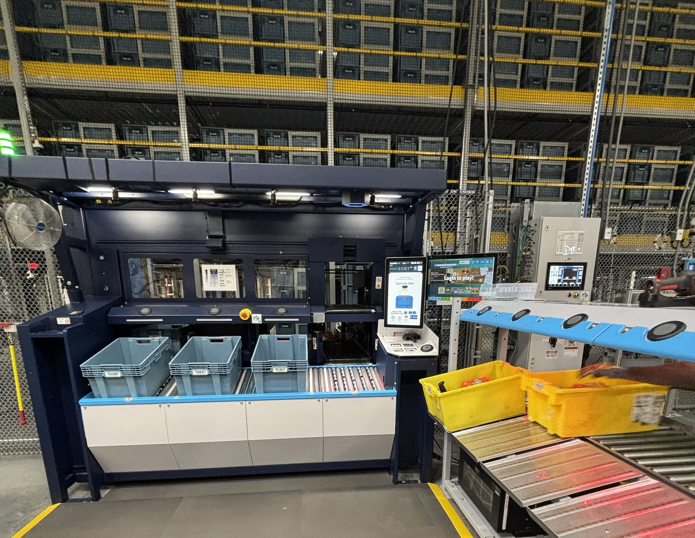
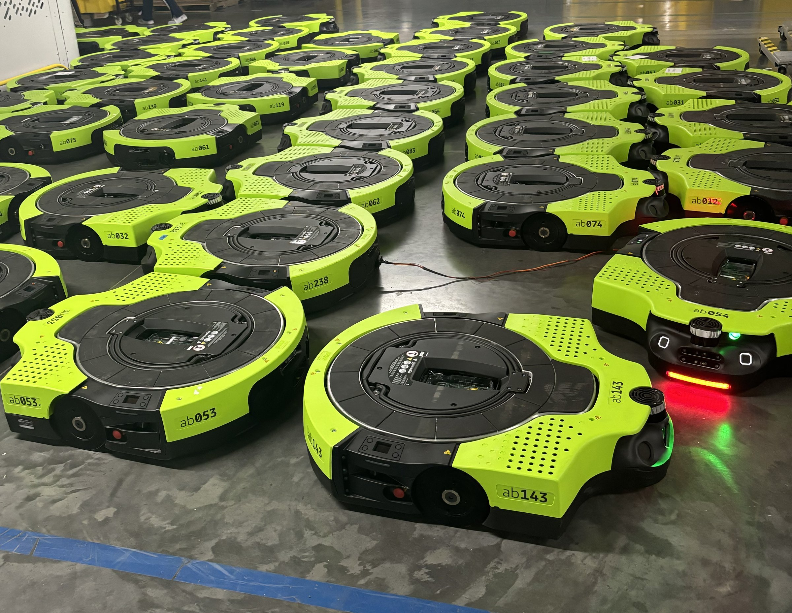
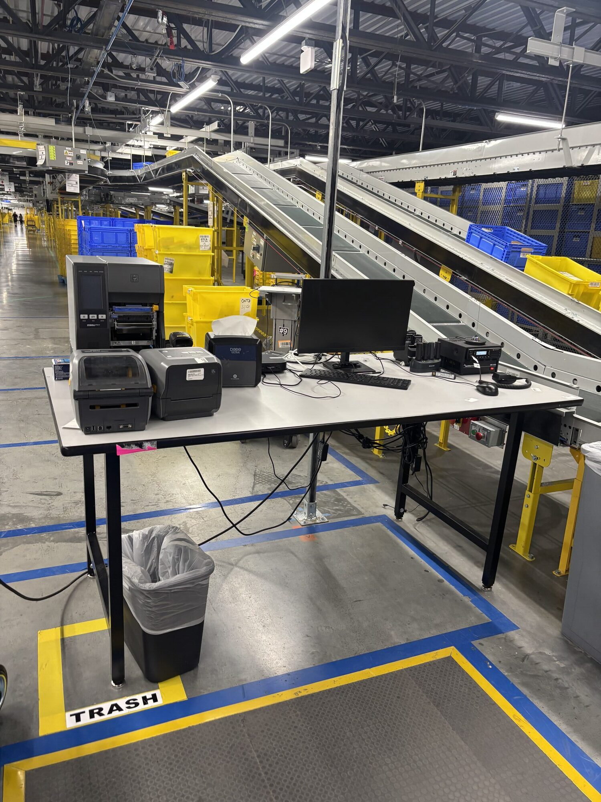
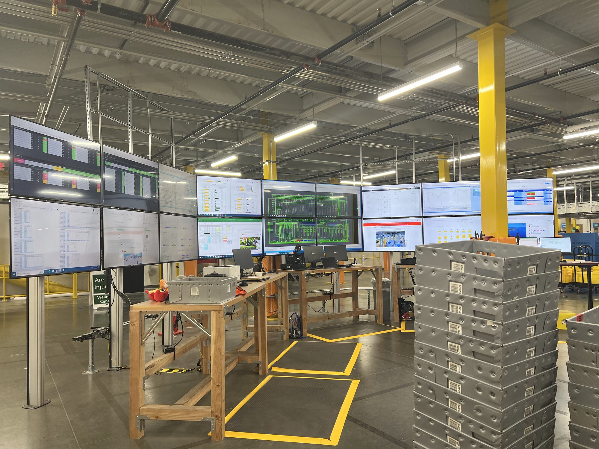

Five years embedded with operators inside high-volume operational environments — designing the workflows, exceptions, and interfaces that decide whether a complex system actually performs the way it's supposed to.
My approach
Operational systems live or die by the moments that aren't on the happy path. After five years embedded in fulfillment centers, these are the five rules that govern every decision I make — from a single button to a multi-program HRI framework. They're how I keep operator UX from getting traded away under hardware deadlines.
The cost of an unclear error state is paid every shift, every station, every operator. I scope exception handling with happy-path UI.
Operators can only act on what they can see. If the system doesn't surface state, they invent their own.
Decisions made under fatigue, noise, and rate pressure are the ones that fail. I design the interface to absorb that load instead of adding to it.
When a fleet scales an order of magnitude, the human-readable signal has to scale with it — or response times balloon and the system stops being collaborative.
Fixed hardware, legacy architecture, aggressive launch dates — these aren't excuses, they're the design brief. The most resilient solutions live inside the constraint.
Selected work
Every project comes back to mapping operator workflows and their exception paths — at the scale of a fulfillment center, a robotic fleet, or a building's entire tool ecosystem.
Case 01 · Amazon Robotics
ToteASRS — the inventory storage and retrieval system that became the baseline for UX across the Amazon Robotics portfolio.
Read the case study
Case 02 · Amazon Robotics
Proteus — Amazon's first autonomous drive unit. I led the HRI framework that simplified onsite issue resolution and informed Gen2 hardware.
Read the case study
Case 03 · Amazon Robotics
Vulcan Stow — Amazon's first robot with a sense of touch. The shared outcome framework that made every operator task and exception path explicit.
Read the case studyCase 04 · Amazon Robotics
A cross-station research framework that turned problem-solve from a downstream cost into a design discipline — with a four-tier resolution hierarchy adopted across new programs.
Read the case study
Case 05 · Amazon Robotics
Week-long ground-truth research that re-shaped how Amazon Robotics planned its next generation of operations tools — and triggered a cross-org single-tool vision.
Read the case study
Get in touch
Currently exploring senior & staff-level UX roles in systems thinking and service design.